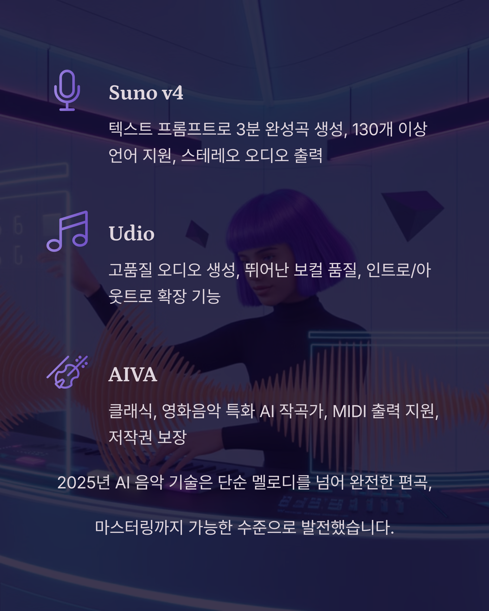

차세대 AI 음악 생성 플랫폼
2025년 AI 음악 기술은 단순한 멜로디 생성을 넘어 완전한 편곡, 마스터링까지 가능한 수준으로 발전했습니다. 각 도구의 특성을 이해하고 목적에 맞게 활용하는 것이 핵심입니다.
🎵 Suno v4
텍스트 프롬프트로 3분 완성곡 생성. 130개 이상 언어 지원, 스테레오 오디오 출력, 커스텀 모드로 세밀한 제어 가능
🎸 Udio
고품질 오디오 생성에 특화. 보컬 품질이 뛰어나며, 인트로/아웃트로 확장 기능으로 완전한 곡 구성 가능
🎹 AIVA Enterprise
클래식, 영화음악에 특화된 AI 작곡가. MIDI 출력 지원으로 DAW 통합이 용이하며, 저작권 보장
🎧 Mubert
실시간 무한 음악 스트림 생성. API 제공으로 앱/게임 통합 가능, 루프 기반 전자음악에 최적화
🚀 최신 AI 음악 기술 트렌드
- Controllable Generation: 사용자 의도에 맞는 정밀한 음악 생성
- Multi-modal Input: 텍스트, 오디오, MIDI 복합 입력
- Real-time Processing: 실시간 음악 생성 및 변형
- Style Transfer: 기존 곡의 스타일을 새로운 곡에 적용
- Stem Separation: AI 기반 트랙 분리 및 리믹스
⚡ 도구별 특화 영역
- 완성곡 생성: Suno, Udio (3-4분 풀송)
- 루프/비트: Mubert, Loudly, Beatoven
- 클래식/오케스트라: AIVA, Amper Music
- 코드 진행: Captain Chords, Scaler 2
- 마스터링: LANDR, eMastered
- 보컬 처리: Synthesizer V, Vocaloid 6
AI 도구 선택 시 고려사항: 출력 형식(오디오/MIDI), 저작권 정책, API 연동 가능성, 음질과 스타일 적합성을 종합적으로 평가해야 합니다.
